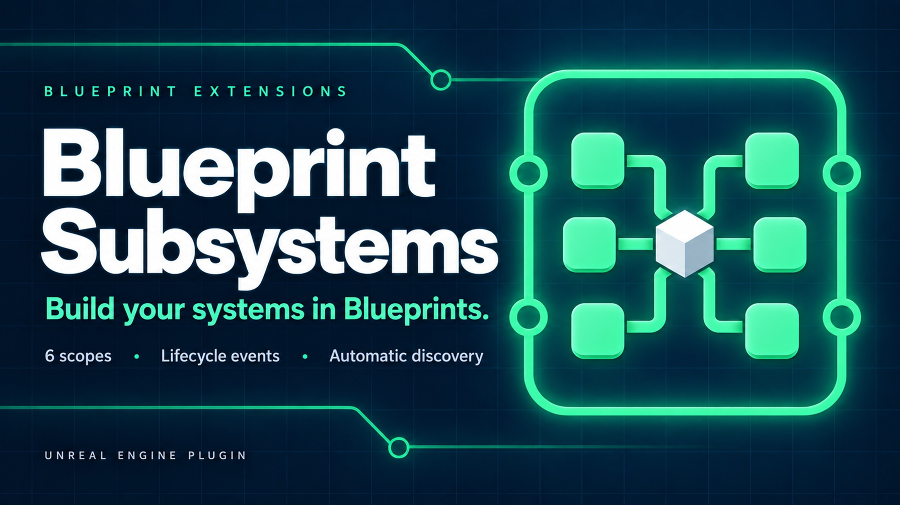

Subsystems are Unreal Engine's answer to services and state that belong to a lifetime rather than to an actor. The engine creates them, destroys them at the right moment and makes them available through a typed Get Subsystem node. They do not need to be placed in a map and callers do not need to keep a reference.
The engine's subsystem classes are normally implemented in C++. Blueprint Subsystems adds Blueprintable bases for all six useful scopes, exposes their lifecycle, discovers the Blueprint classes and makes sure their assets are included in packaged builds.
Enable Blueprint Subsystems in Edit > Plugins and restart the editor when requested.
In the Content Browser choose Add > Blueprints > Blueprint Subsystem. Pick the base whose lifetime matches the job, name the new asset, then open it and implement Initialize. From any compatible graph, search for Get followed by the Blueprint class name to retrieve its current instance.
Nothing has to be placed in a map. With automatic discovery enabled, saving a supported Blueprint class is enough for the plugin to register it. Restart the editor after changing discovery settings.
The most important decision is not what the subsystem does but how long its instance should live.
| Scope | Instances | Lifetime and typical uses |
|---|---|---|
| Engine | One per process | Survives worlds and Play In Editor sessions; process-wide services. |
| Editor | One per editor session | Editor tools, validation and pipeline state; never exists in a packaged game. |
| Game Instance | One per game instance | One game session across level changes; progression, saves and matchmaking. |
| World | One per supported world | One level or world; level managers and world-wide gameplay state. |
| Tickable World | One per supported world | The World scope plus a Blueprint Tick event. |
| Local Player | One per local player | Per-seat state that survives travel; input, settings and HUD models. |
Choose Blueprint Engine Subsystem for state that has to outlive worlds and game instances. It has no world of its own, so it is not the place for actors or level-specific objects.
Choose Blueprint Editor Subsystem for editor-only automation. The class belongs to an Editor module and does not exist in a packaged game. Runtime gameplay must never depend on it.
Choose Blueprint Game Instance Subsystem for one instance per game session. It survives level travel and receives the owning Game Instance. In Play In Editor, every run receives a fresh instance, so state does not leak into the next run.
Choose Blueprint World Subsystem for state tied to one world. A fresh instance is created for each supported world and removed when that world is torn down. The Tickable variant adds Tick and settings that control whether it ticks in editor worlds or while the game is paused.
World subsystems can also be created for the level open in the editor and for preview worlds. Set Supported World Types on the Blueprint defaults to decide which kinds are valid. Gameplay-only subsystems usually exclude Editor and Preview.
Prefer the non-ticking base when the subsystem only reacts to events. Even an empty Blueprint Tick has a per-frame cost.
Choose Blueprint Local Player Subsystem for one instance per local player. A split-screen game has one per seat and a dedicated server has none. The subsystem survives controller replacement and level travel.
Every base exposes the same core events:
World and Tickable World subsystems receive Post Initialize after every subsystem in that world has been initialized, then World Begin Play before Begin Play runs on the world's actors. Tickable World adds Tick with Delta Time and runtime Set Tick Enabled control.
Local Player subsystems receive Player Controller Changed whenever their controller changes. During travel it can be called first with no controller and later with the new one.
Call Initialize Dependency only from Initialize when this subsystem needs another subsystem of the same scope immediately. The dependency is created before the current Initialize continues. Without this call, class discovery order does not define initialization order.
When a dependency is merely used later, retrieve it normally instead of forcing an order.
Automatic discovery searches the Asset Registry for supported Blueprint subsystem classes and registers them with Unreal Engine. It also supplies those asset packages to the cooker. That second step matters because a subsystem is often intentionally unreferenced; without an explicit cook rule, it can work in the editor and be absent from a packaged build.
Open Project Settings > Plugins > Blueprint Subsystems to configure discovery:
/Game/Subsystems. An empty list searches every mounted content root, including plugin content.Changes marked as requiring a restart take effect after restarting the editor.
Automatic discovery covers ordinary project and plugin content. The Blueprint Subsystems node category also provides manual control for downloadable content, game-mode-specific services or a project that disables automatic discovery:
Dynamic registration changes live state. Make sure every system that keeps a subsystem reference can also handle that subsystem being unregistered.
Engine and Editor subsystem collections normally live for the whole editor session, so recompiling their Blueprint would otherwise leave the old instance running old bytecode. With Reinitialize On Blueprint Compile enabled, the plugin deinitializes affected instances and creates them again.
That refresh deliberately loses transient instance state and runs Initialize again. It is skipped while playing so a compile does not mutate an active Play In Editor session. Disable the setting when preserving editor-session state is more important than applying the new graph immediately.
Create a Blueprint Game Instance Subsystem and store the state there. Initialize it once when the game session starts and read it from each world through its Get node. Do not use a World subsystem, because that instance is replaced during travel.
Create a Blueprint World Subsystem, exclude Editor and Preview from Supported World Types when it is gameplay-only, and spawn or discover level objects from World Begin Play. Deinitialize removes bindings and references as the level is torn down.
Create a Blueprint Local Player Subsystem. Each local player receives a separate instance. React to Player Controller Changed instead of assuming the first controller survives level travel.
Create a Blueprint Editor Subsystem, bind the relevant editor delegates from Initialize and unbind them from Deinitialize. Never reference that class from runtime gameplay graphs.
Confirm that the class is visible to automatic discovery or appears under Additional Subsystem Classes. If Search Paths is non-empty, the asset must be below one of those paths unless explicitly listed. Build from the source plugin rather than copying only editor-generated binaries.
Check the scope and owner used by the Get node, then check Should Create Subsystem and Supported World Types. For Local Player, remember that a dedicated server has no local players. An Editor subsystem cannot exist in a packaged game.
Use Initialize Dependency from Initialize when both subsystems use the same scope. For World subsystems that only need all peers ready, move the work to Post Initialize.
That is the expected result of Reinitialize On Blueprint Compile: the old instance receives Deinitialize and a fresh instance receives Initialize. Disable the setting or move persistent data outside the subsystem while editing.
Check Tick Enabled, the runtime result of Is Tick Enabled, Supported World Types and Tick In Editor. If the game is paused, Tick When Paused must also be enabled.
Questions and bug reports: tomasz.klin@gmail.com.
Include the engine version and the plugin version - this manual documents 1.0.0 - plus the subsystem scope and the world type when they are relevant.